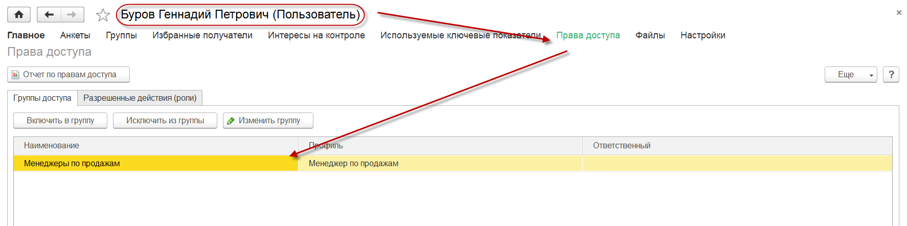
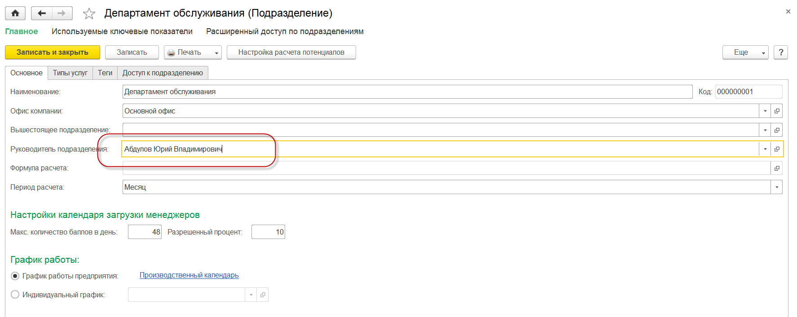

Модуль показателей используется для контроля и анализа показателей деятельности предприятия. Все показатели персонифицированы, т.е. закреплены за конкретными пользователями. Ввиду чего в решении включен механизм доступа к данным показателей других пользователей. Более подробно о доступе к данным других пользователей описано в разделе «Главное – Помощь – Управление доступом к пользователям по иерархии подразделений».
Решение поставляется с предопределенным списком шаблонов показателей и отчетов для их анализа (расшифровкам). Назначить показатель пользователю может только его руководитель. Также пользователь НЕ может назначить показатель для самого себя. Возможность назначения показателей доступна пользователю у которого:


Таким образом, для возможности назначения показателей сотрудникам необходимо быть руководителем подразделения, к которому сотрудники принадлежат, или руководителем вышестоящего подразделения.
Важно! Контроль и анализ показателей с помощью Монитора доступно только в версии КОРП линейки решений 1С:CRM.
Роль "Менеджер". Просмотр пользователем назначенных ему показателей